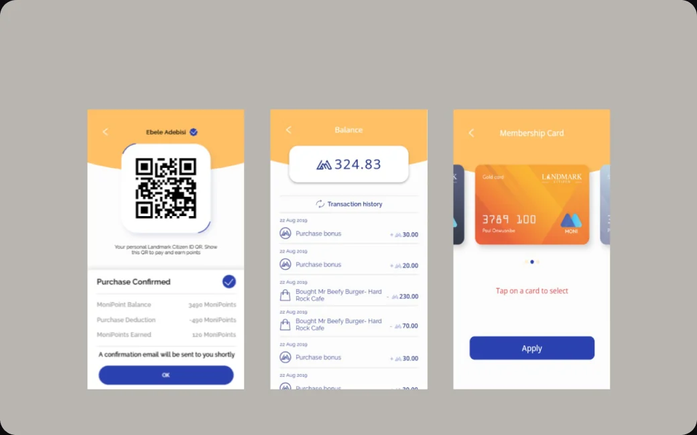
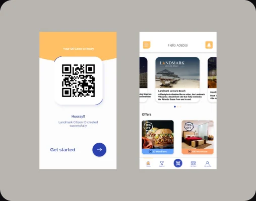
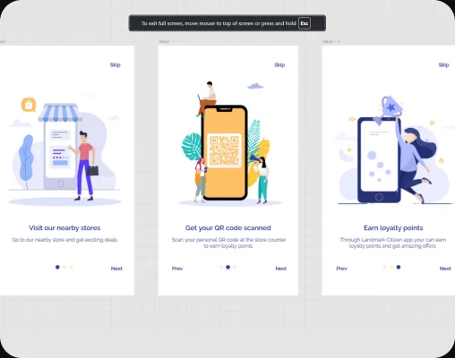

Moni by [AI]
MONI is a rewards-based platform under Analytics Intelligence’s [AI] Collaborative Customer Intelligence initiative, offering personalized advertising and sales campaigns. I was tasked to research and develop a functional concept and mobile app UI tailored for Landmark Africa, the pilot users.



Challenge & Approach
Landmark Africa is a mixed lifestyle destination: retail stores, ticketed attractions like archery, wall climbing and the shooting range, and restaurants and cafés, all in one place. MONI had to turn these separate touchpoints into one loyalty experience that worked across shoppers’ mobile phones and the handheld scanners staff used at tills, ticket gates and restaurant counters. There was no direct competitor in the market at the time, so my research started from a similar loyalty platform launched in Turkey. I studied how it worked and adapted what was relevant to the Nigerian context. As UI/UX Designer working alongside the engineering team, I defined the main goal with stakeholders and observed the current in-store shopping, ticket booking and dining journeys. I then aligned the varied ideas and requirements from each business unit into one service journey. From there I designed two connected experiences sharing one design language and real-time data flow: a personalized customer app for earning and redeeming rewards, and a fast, glanceable scanner interface for staff. I refined both through iterative prototyping into a practical omnichannel experience.
Outcome
Delivered an omnichannel loyalty experience linking the customer app with in-store scanners across retail, attractions and dining, enabling seamless reward earning, redemption and personalized offers throughout the Landmark ecosystem. This laid the groundwork for expanding MONI’s adoption across multiple sectors.
Outcome
Delivered a user-centric app design optimized for Landmark Africa, enabling seamless reward redemption and personalized offers. This laid the groundwork for expanding MONI’s adoption across multiple sectors.